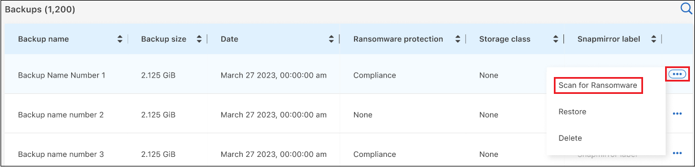
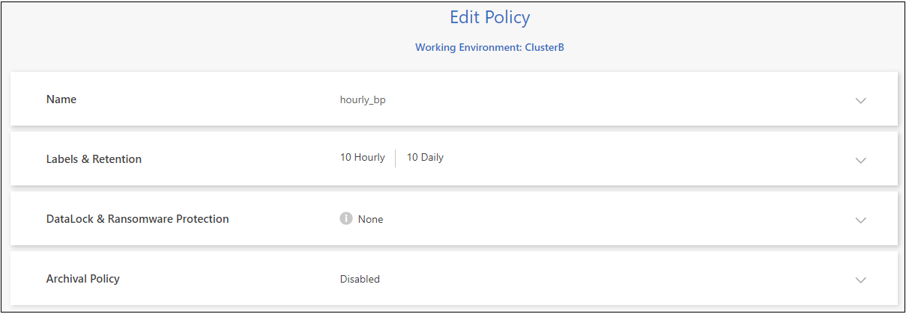
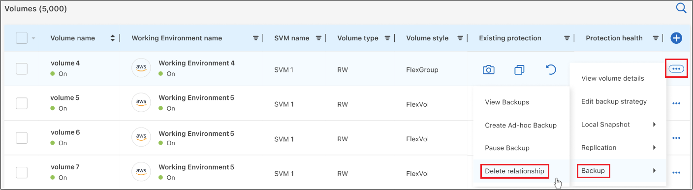

リリースノート
リリースノート
ONTAPシステムのバックアップを管理します
 変更を提案
変更を提案
Cloud Volumes ONTAPシステムとオンプレミスのONTAPシステムのバックアップを管理するには、バックアップスケジュールの変更、ボリュームバックアップの有効化/無効化、バックアップの一時停止、バックアップの削除などを行います。これには、Snapshotコピー、レプリケートされたボリューム、オブジェクトストレージ内のバックアップファイルなど、すべてのタイプのバックアップが含まれます。

|
ストレージシステム上で直接、またはクラウドプロバイダ環境からバックアップファイルを管理または変更しないでください。ファイルが破損し、サポートされていない構成になる可能性があります。 |
作業環境内のボリュームのバックアップステータスを表示します
[Volumes Backup]ダッシュボードでは、現在バックアップされているすべてのボリュームのリストを確認できます。これには、Snapshotコピー、レプリケートされたボリューム、オブジェクトストレージ内のバックアップファイルなど、すべてのタイプのバックアップが含まれます。現在バックアップされていない作業環境内のボリュームを表示することもできます。
-
BlueXPメニューから、*Protection > Backup and recovery*を選択します。
-
[ボリューム]*タブをクリックして、Cloud Volumes ONTAPおよびオンプレミスのONTAPシステムのバックアップボリュームのリストを表示します。

-
特定の作業環境で特定のボリュームを検索する場合は、作業環境とボリュームに基づいてリストを絞り込むことができます。検索フィルタを使用することも、ボリュームの形式（FlexVolまたはFlexGroup）やボリュームタイプなどに基づいて列をソートすることもできます。
追加の列（アグリゲート、セキュリティ形式（WindowsまたはUNIX）、Snapshotポリシー、レプリケーションポリシー、およびバックアップポリシー）を表示するには、を選択します
 。
。 -
[Existing protection]列の保護オプションのステータスを確認します。3つのアイコンは、[Local Snapshot Copies]、[Replicated Volumes]、および[Backups in object storage]を表します。

各アイコンは、バックアップタイプがアクティブになっているときは青で、非アクティブになっているときはグレーで表示されます。各アイコンにカーソルを合わせると、使用されているバックアップポリシーや、各バックアップタイプのその他の関連情報を確認できます。
作業環境内の追加ボリュームでバックアップをアクティブ化します
BlueXPのバックアップとリカバリを初めて有効にしたときに作業環境内の一部のボリュームでのみバックアップをアクティブ化した場合は、あとで追加のボリュームのバックアップをアクティブ化できます。
-
タブで、バックアップをアクティブ化するボリュームを指定し、[操作]メニューを選択します
 行の最後にある[バックアップのアクティブ化]*を選択します。
行の最後にある[バックアップのアクティブ化]*を選択します。
-
[define backup strategy]ページで、バックアップアーキテクチャを選択し、ローカルSnapshotコピー、レプリケートされたボリューム、バックアップファイルのポリシーとその他の詳細を定義します。この作業環境でアクティブ化した初期ボリュームのバックアップオプションの詳細については、を参照してください。次に、 [ * 次へ * ] をクリックします。
-
このボリュームのバックアップ設定を確認し、*[バックアップのアクティブ化]*をクリックします。
同一のバックアップ設定で複数のボリュームのバックアップを同時にアクティブ化する場合は、を参照してください 複数のボリュームのバックアップ設定を編集します を参照してください。
既存のボリュームに割り当てられているバックアップ設定を変更します
ポリシーが割り当てられている既存のボリュームに割り当てられているバックアップポリシーを変更することができます。ローカルSnapshotコピー、レプリケートされたボリューム、およびバックアップファイルのポリシーを変更できます。ボリュームに適用する新しいSnapshot、レプリケーション、またはバックアップポリシーがすでに存在している必要があります。
単一のボリュームのバックアップ設定を編集します
-
タブで、ポリシーを変更するボリュームを特定し、[操作]メニューを選択します
行の末尾に移動し、[バックアップ戦略の編集]*を選択します。 ボタンのスクリーンショット。"]
ボタンのスクリーンショット。"] -
[バックアップ戦略の編集]ページで、ローカルSnapshotコピー、レプリケートされたボリューム、およびバックアップファイルの既存のバックアップポリシーを変更し、*[次へ]*をクリックします。
このクラスタでBlueXPのバックアップとリカバリをアクティブ化するときに、初期バックアップポリシーで_DataLockとRansomware Protection_forクラウドバックアップを有効にした場合は、DataLockで設定されている他のポリシーのみが表示されます。BlueXPのバックアップとリカバリをアクティブ化するときに_DataLockとRansomware Protection _を有効にしなかった場合は、DataLockが設定されていない他のクラウドバックアップポリシーのみが表示されます。
-
このボリュームのバックアップ設定を確認し、*[バックアップのアクティブ化]*をクリックします。
複数のボリュームのバックアップ設定を編集します
複数のボリュームで同じバックアップ設定を使用する場合は、複数のボリュームのバックアップ設定を同時にアクティブ化または編集できます。バックアップ設定がないボリューム、Snapshot設定のみ、クラウドへのバックアップ設定のみなどを選択し、さまざまなバックアップ設定を使用して、これらすべてのボリュームで一括変更を行うことができます。
複数のボリュームを使用する場合は、すべてのボリュームに次の共通の特性が必要です。
-
同じ作業環境
-
同じ形式（FlexVolまたはFlexGroupボリューム）
-
同じタイプ（読み書き可能またはデータ保護ボリューム）
-
[ボリューム]*タブで、ボリュームが配置されている作業環境でフィルタします。
-
バックアップ設定を管理するすべてのボリュームを選択します。
-
設定するバックアップアクションのタイプに応じて、[Bulk actions]メニューのボタンをクリックします。
 ボタンのスクリーンショット。"]
ボタンのスクリーンショット。"]バックアップ操作… クリックするボタン Snapshotバックアップの設定を管理します
ローカルスナップショットの管理
レプリケーションバックアップの設定を管理します
レプリケーションの管理
クラウドへのバックアップの設定を管理します
バックアップの管理
複数のタイプのバックアップ設定を管理します。このオプションでは、バックアップアーキテクチャも変更できます。
バックアップとリカバリの管理
-
表示されたバックアップのページで、ローカルSnapshotコピー、レプリケートされたボリューム、またはバックアップファイルの既存のバックアップポリシーを変更し、*[保存]*をクリックします。
このクラスタでBlueXPのバックアップとリカバリをアクティブ化するときに、初期バックアップポリシーで_DataLockとRansomware Protection_forクラウドバックアップを有効にした場合は、DataLockで設定されている他のポリシーのみが表示されます。BlueXPのバックアップとリカバリをアクティブ化するときに_DataLockとRansomware Protection _を有効にしなかった場合は、DataLockが設定されていない他のクラウドバックアップポリシーのみが表示されます。
ボリュームの手動バックアップはいつでも作成できます
オンデマンドバックアップはいつでも作成することができ、ボリュームの現在の状態をキャプチャすることができます。これは、ボリュームに非常に重要な変更が加えられていて、そのデータを保護するために次回のスケジュールされたバックアップを待つ必要がない場合に便利です。また、この機能を使用して、現在バックアップされていないボリュームのバックアップを作成し、現在の状態をキャプチャすることもできます。
ボリュームのオブジェクトに対する一時的なSnapshotコピーまたはバックアップを作成できます。アドホックレプリケーションボリュームは作成できません。
バックアップ名にはタイムスタンプが含まれるため、他のスケジュールされたバックアップからオンデマンドバックアップを特定できます。
このクラスタでBlueXPのバックアップとリカバリをアクティブ化するときに_DataLockとRansomware Protection_を有効にした場合、オンデマンドバックアップにもDataLockが設定され、保持期間は30日になります。ランサムウェアスキャンはアドホックバックアップではサポートされていません。 "DataLockとランサムウェアによる保護の詳細をご確認ください"。
アドホックバックアップを作成する場合、ソースボリューム上にSnapshotが作成されることに注意してください。このSnapshotは通常のSnapshotスケジュールの一部ではないため、offのままになりません。バックアップの完了後に、このSnapshotをソースボリュームから手動で削除できます。これにより、このSnapshotに関連するブロックが解放されます。Snapshotの名前はで始まります cbs-snapshot-adhoc-。 "ONTAP CLIを使用してSnapshotを削除する方法を参照してください"。

|
オンデマンドボリュームバックアップは、データ保護ボリュームではサポートされません。 |
-
[* Volumes （ボリューム） ] タブで、をクリックします
 アイコン"] ボリュームの*>[アドホックバックアップの作成]*を選択します。
アイコン"] ボリュームの*>[アドホックバックアップの作成]*を選択します。 ボタンのスクリーンショット。"]
ボタンのスクリーンショット。"]
バックアップが作成されるまで、このボリュームの Backup Status 列には「 In Progress 」と表示されます。
各ボリュームのバックアップのリストを表示します
各ボリュームに存在するすべてのバックアップファイルのリストを表示できます。このページには、ソースボリューム、デスティネーションの場所、および前回作成されたバックアップの詳細、現在のバックアップポリシー、バックアップファイルのサイズなどのバックアップの詳細が表示されます。
-
[* Volumes （ボリューム） ] タブで、をクリックします
アイコン"] を選択し、*[ボリュームの詳細を表示]*を選択します。 ボタンのスクリーンショット。"]
ボタンのスクリーンショット。"]デフォルトでは、ボリュームの詳細とSnapshotコピーのリストが表示されます。

-
、[Replication]、または[Backup]*を選択すると、各バックアップタイプのすべてのバックアップファイルのリストが表示されます。

オブジェクトストレージ内のボリュームバックアップに対してランサムウェアスキャンを実行します
NetAppランサムウェア対策ソフトウェアは、バックアップファイルをスキャンして、オブジェクトファイルへのバックアップが作成されたときや、バックアップファイルのデータがリストアされたときに、ランサムウェア攻撃の証拠を探します。また、オンデマンドのランサムウェア対策スキャンをいつでも実行して、オブジェクトストレージ内の特定のバックアップファイルのユーザビリティを検証することもできます。これは、特定のボリュームでランサムウェア問題 が実行されている場合に、そのボリュームのバックアップが影響を受けないことを確認するのに役立ちます。
この機能は、ボリュームのバックアップがONTAP 9.11.1以降のシステムから作成された場合、およびオブジェクトへのバックアップポリシーで_DataLockとRansomware Protection_を有効にした場合にのみ使用できます。
-
[* Volumes （ボリューム） ] タブで、をクリックします
アイコン"] を選択し、*[ボリュームの詳細を表示]*を選択します。ボタンのスクリーンショット。"]ボリュームの詳細が表示されます。
-
[バックアップ]*を選択すると、オブジェクトストレージ内のバックアップファイルのリストが表示されます。

-
をクリックします
アイコン"] ランサムウェアをスキャンするボリュームバックアップファイルの*[ランサムウェアをスキャン]*をクリックします。
[Ransomware Protection]列には、スキャンが実行中であることが表示されます。
ソースボリュームとのレプリケーション関係を管理します
2つのシステム間にデータレプリケーションを設定したら、データレプリケーション関係を管理できます。
-
[* Volumes （ボリューム） ] タブで、をクリックします
アイコン"] をクリックし、*[レプリケーション]*オプションを選択します。使用可能なすべてのオプションが表示されます。 -
実行するレプリケーションアクションを選択します。
 アクションメニューで実行できる操作のリストを示すスクリーンショット。"]
アクションメニューで実行できる操作のリストを示すスクリーンショット。"]次の表に、使用可能なアクションを示します。
アクション 説明 レプリケーションを表示します
ボリューム関係に関する詳細が表示されます。これには、転送情報、前回の転送情報、ボリュームに関する詳細、関係に割り当てられている保護ポリシーに関する情報が含まれます。
レプリケーションを更新します
差分転送を開始して、ソースボリュームと同期するデスティネーションボリュームを更新します。
レプリケーションの一時停止
デスティネーションボリュームを更新するには、Snapshotコピーの差分転送を一時停止します。増分更新を再開する場合は、後で再開できます。
レプリケーションを解除します
ソースボリュームとデスティネーションボリュームの間の関係を解除し、デスティネーションボリュームをデータアクセス用にアクティブ化します。これにより、ボリュームが読み取り/書き込み可能になります。
このオプションは通常、データの破損、偶発的な削除、オフライン状態などのイベントが原因でソースボリュームがデータを処理できない場合に使用します。
"ONTAP のドキュメントで、データアクセスのためのデスティネーションボリュームを設定し、ソースボリュームを再アクティブ化する方法について説明します"レプリケーションを中止します
デスティネーションシステムへのこのボリュームのバックアップを無効にし、ボリュームのリストアも無効にします。既存のバックアップは削除されません。ソースボリュームとデスティネーションボリュームの間のデータ保護関係は削除されません。
リバース再同期
ソースボリュームとデスティネーションボリュームの役割を逆にします。元のソースボリュームの内容は、デスティネーションボリュームの内容によって上書きされます。これは、オフラインになったソースボリュームを再アクティブ化する場合に役立ちます。
前回のデータレプリケーションからソースボリュームが無効になったまでの間に元のソースボリュームに書き込まれたデータは保持されません。関係の削除
ソースボリュームとデスティネーションボリューム間のデータ保護関係を削除します。つまり、ボリューム間でデータレプリケーションが行われなくなります。この処理では、デスティネーションボリュームはデータアクセス用にアクティブ化されません。つまり、デスティネーションボリュームは読み書き可能になりません。また、システム間に他のデータ保護関係がない場合は、クラスタピア関係と Storage VM （ SVM ）ピア関係も削除されます。
操作を選択すると、関係がBlueXPによって更新されます。
既存のクラウドへのバックアップポリシーを編集する
作業環境でボリュームに現在適用されているバックアップポリシーの属性を変更することができます。バックアップポリシーを変更すると、そのポリシーを使用している既存のすべてのボリュームが対象になります。
|
|
|
-
[* Volumes （ボリューム） ] タブで、 [* Backup Settings （バックアップ設定） ] を選択します。

-
[Backup Settings_] ページで、をクリックします
アイコン"] ポリシー設定を変更する作業環境で、[ポリシーの管理]を選択します。 ページの [ ポリシーの管理 ] オプションを示すスクリーンショット。"]
ページの [ ポリシーの管理 ] オプションを示すスクリーンショット。"] -
[ポリシーの管理]ページで、その作業環境で変更するバックアップポリシーの[編集]をクリックします。

-
[ポリシーの編集]ページで、をクリックします
 [ラベルと保持期間]セクションを展開してスケジュールやバックアップの保持期間を変更するには'[保存]をクリックします
[ラベルと保持期間]セクションを展開してスケジュールやバックアップの保持期間を変更するには'[保存]をクリックします
クラスタでONTAP 9.10.1以降が実行されている場合は、特定の日数が経過したバックアップをアーカイブストレージに階層化するかどうかを有効または無効にすることもできます。
[+]

[+]
アーカイブへのバックアップの階層化を停止した場合、アーカイブストレージに階層化されたバックアップファイルはその階層に残ります。アーカイブされたバックアップファイルは自動的に標準階層に戻されません。新しいボリュームバックアップのみが標準階層に配置されます。
新しいバックアップをクラウドポリシーに追加します
作業環境でBlueXPのバックアップとリカバリを有効にすると、最初に選択したすべてのボリュームが定義したデフォルトのバックアップポリシーを使用してバックアップされます。Recovery Point Objective （ RPO ；目標復旧時点）が異なるボリュームに対して異なるバックアップポリシーを割り当てる場合は、そのクラスタに追加のポリシーを作成し、そのポリシーを他のボリュームに割り当てることができます。
作業環境内の特定のボリュームに新しいバックアップポリシーを適用する場合は、最初にそのバックアップポリシーを作業環境に追加する必要があります。すると その作業環境内のボリュームにポリシーを適用します。
|
|
|
-
[* Volumes （ボリューム） ] タブで、 [* Backup Settings （バックアップ設定） ] を選択します。
-
[Backup Settings_] ページで、をクリックします
アイコン"] 新しいポリシーを追加する作業環境で、 [ ポリシーの管理 ] を選択します。 ページの [ ポリシーの管理 ] オプションを示すスクリーンショット。"] -
[ ポリシーの管理 ] ページで、 [ 新しいポリシーの追加 ] をクリックします。
 ページの [ 新しいポリシーの追加 ] ボタンを示すスクリーンショット。"]
ページの [ 新しいポリシーの追加 ] ボタンを示すスクリーンショット。"] -
[新しいポリシーの追加]ページで、をクリックします
[ラベルと保持期間]セクションを展開してスケジュールとバックアップの保持期間を定義するには'[保存]をクリックします
クラスタでONTAP 9.10.1以降が実行されている場合は、特定の日数が経過したバックアップをアーカイブストレージに階層化するかどうかを有効または無効にすることもできます。
[+]
バックアップを削除します
BlueXPのバックアップとリカバリでは、1つのバックアップファイルを削除したり、ボリュームのすべてのバックアップを削除したり、作業環境内のすべてのボリュームのすべてのバックアップを削除したりできます。すべてのバックアップを削除するのは、不要になったバックアップや、ソースボリュームを削除したあとにすべてのバックアップを削除する場合などです。
DataLockとRansomwareによる保護を使用してロックしたバックアップファイルは削除できません。ロックされたバックアップファイルを1つ以上選択した場合、UIから[削除]オプションを使用できなくなります。
|
|
バックアップがある作業環境またはクラスタを削除する場合は、システムを削除する前に * バックアップを削除する必要があります。システムを削除しても、BlueXPのバックアップとリカバリではバックアップは自動的に削除されません。また、システムの削除後にバックアップを削除する機能は現在UIでサポートされていません。残りのバックアップについては、引き続きオブジェクトストレージのコストが発生します。 |
作業環境のすべてのバックアップファイルを削除します
作業環境のオブジェクトストレージ上のバックアップをすべて削除しても、この作業環境内のボリュームの以降のバックアップが無効になることはありません。作業環境ですべてのボリュームのバックアップの作成を停止するには、バックアップを非アクティブ化します ここで説明するようにします。
この処理は、Snapshotコピーやレプリケートされたボリュームには影響しません。これらのタイプのバックアップファイルは削除されません。
-
[* Volumes （ボリューム） ] タブで、 [* Backup Settings （バックアップ設定） ] を選択します。
ボタンを示すスクリーンショット。"] -
をクリックします
アイコン"] すべてのバックアップを削除する作業環境で、 * すべてのバックアップを削除 * を選択します。 ボタンを選択したスクリーンショット。"]
ボタンを選択したスクリーンショット。"] -
確認ダイアログボックスで、作業環境の名前を入力し、 * 削除 * をクリックする。
ボリュームのバックアップファイルを1つ削除します
不要になったバックアップファイルは1つだけ削除できます。これには、ボリュームのSnapshotコピーまたはオブジェクトストレージにあるバックアップの1つのバックアップが削除されます。
レプリケートされたボリューム（データ保護ボリューム）は削除できません。
-
[* Volumes （ボリューム） ] タブで、をクリックします
アイコン"] を選択し、*[ボリュームの詳細を表示]*を選択します。ボタンのスクリーンショット。"]ボリュームの詳細が表示されます。* Snapshot 、 Replication 、または Backup *を選択すると、ボリュームのすべてのバックアップファイルのリストが表示されます。デフォルトでは、使用可能なSnapshotコピーが表示されます。
-
削除するバックアップファイルのタイプを確認するには、* Snapshot または Backup *を選択します。
-
をクリックします
アイコン"] 削除するボリュームバックアップファイルに対して、 * 削除 * をクリックします。以下のスクリーンショットは、オブジェクトストレージ内のバックアップファイルからのものです。
-
確認ダイアログボックスで、 * 削除 * をクリックします。
ボリュームのバックアップ関係を削除します
ボリュームのバックアップ関係を削除すると、新しいバックアップファイルの作成を中止してソースボリュームを削除し、既存のバックアップファイルはすべて保持する場合に、アーカイブのメカニズムを使用できます。これにより、必要に応じて、あとでソースストレージシステムからスペースを消去しながら、バックアップファイルからボリュームをリストアできるようになります。
ソースボリュームを削除する必要はありません。ボリュームのバックアップ関係を削除し、ソースボリュームを保持することができます。この場合、ボリュームのバックアップはあとで「アクティブ化」できます。この場合も元のベースラインバックアップコピーが引き続き使用されます。新しいベースラインバックアップコピーは作成されず、クラウドにエクスポートされません。バックアップ関係を再アクティブ化すると、ボリュームにデフォルトのバックアップポリシーが割り当てられます。
この機能は、システムでONTAP 9.12.1以降が実行されている場合にのみ使用できます。
BlueXPのバックアップとリカバリのユーザインターフェイスでソースボリュームを削除することはできません。ただし、Canvas、およびのVolume Detailsページを開くことはできます "そこからボリュームを削除します"。
|
|
関係を削除したあとでボリュームバックアップファイルを個別に削除することはできません。ただし、 "ボリュームのバックアップをすべて削除します" すべてのバックアップ・ファイルを削除する場合 |
-
[* Volumes （ボリューム） ] タブで、をクリックします
アイコン"] ソースボリュームの*>[関係の削除]*を選択します。
作業環境でBlueXPのバックアップとリカバリを非アクティブ化します
作業環境でBlueXPのバックアップとリカバリを無効にすると、システム上の各ボリュームのバックアップとボリュームのリストアも無効になります。既存のバックアップは削除されません。この作業環境からバックアップ・サービスの登録を解除することはありません。基本的には、すべてのバックアップおよびリストア処理を一定期間停止できます。
クラウドから引き続き課金されます が提供する容量のオブジェクトストレージコストのプロバイダ バックアップは自分以外で使用します バックアップを削除します。
-
[* Volumes （ボリューム） ] タブで、 [* Backup Settings （バックアップ設定） ] を選択します。
ボタンを示すスクリーンショット。"] -
_ バックアップ設定ページ _ で、をクリックします
アイコン"] バックアップを無効にする作業環境で、 * バックアップを非アクティブ化 * を選択します。
-
確認ダイアログボックスで、 * Deactivate * をクリックします。
|
|
バックアップが無効になっている間は、その作業環境に対して * バックアップのアクティブ化 * ボタンが表示されます。このボタンは、作業環境でバックアップ機能を再度有効にする場合にクリックします。 |
作業環境のBlueXPバックアップとリカバリの登録を解除します
バックアップ機能の使用が不要になり、作業環境でのバックアップに対する課金を停止する場合は、作業環境のBlueXPバックアップ/リカバリの登録を解除できます。通常、この機能は、作業環境を削除する予定で、バックアップサービスをキャンセルする場合に使用します。
この機能は、クラスタバックアップの格納先のオブジェクトストアを変更する場合にも使用できます。作業環境のBlueXPバックアップ/リカバリの登録を解除したら、新しいクラウドプロバイダの情報を使用して、そのクラスタのBlueXPバックアップ/リカバリを有効にできます。
BlueXPのバックアップとリカバリの登録を解除する前に、次の手順をこの順序で実行する必要があります。
-
作業環境でBlueXPのバックアップとリカバリを非アクティブ化します
-
その作業環境のバックアップをすべて削除します
登録解除オプションは、これら 2 つの操作が完了するまで使用できません。
-
[* Volumes （ボリューム） ] タブで、 [* Backup Settings （バックアップ設定） ] を選択します。
ボタンを示すスクリーンショット。"] -
_ バックアップ設定ページ _ で、をクリックします
アイコン"] バックアップ・サービスの登録を解除する作業環境では、 * 登録解除 * を選択します。
-
確認ダイアログボックスで、 * 登録解除 * をクリックします。